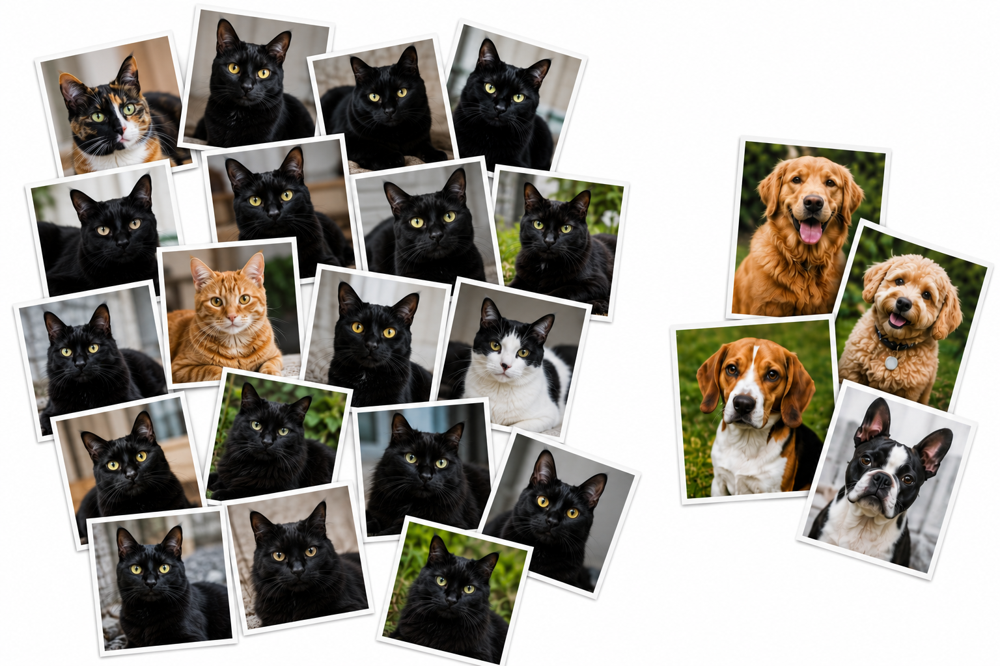
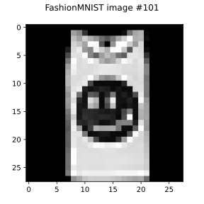
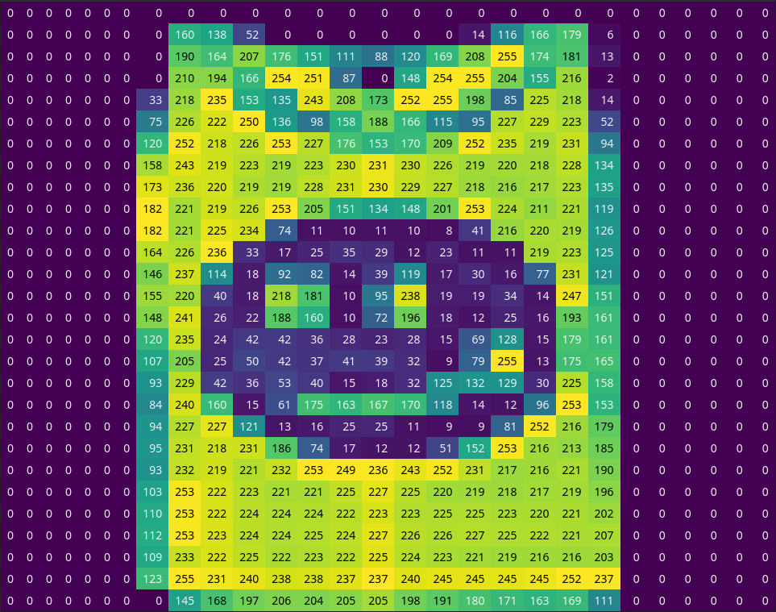
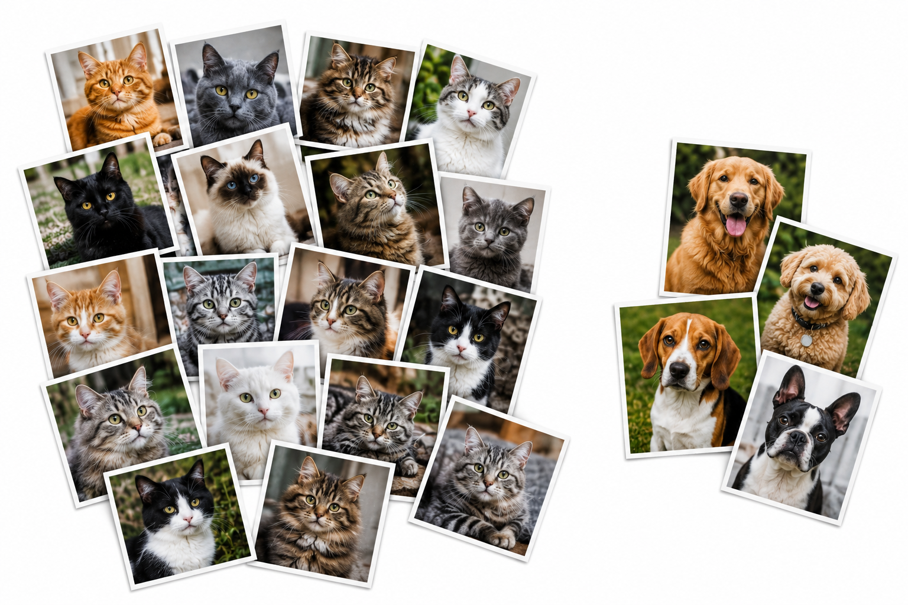
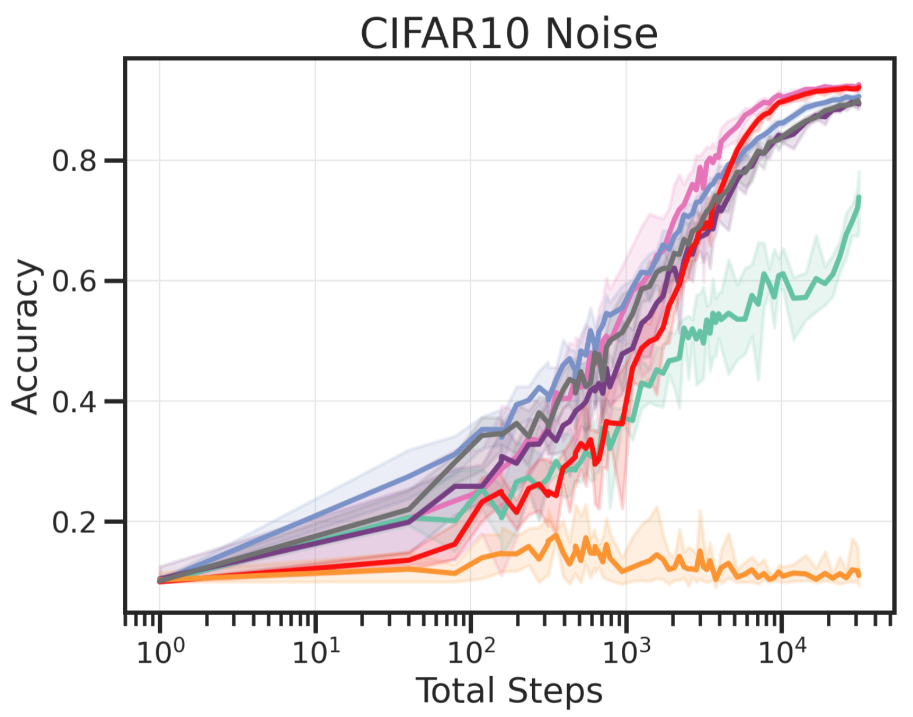
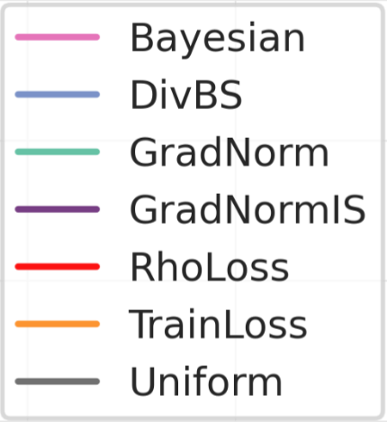

Online Batch Selection (and Gradient Descent) for the Uninitiated

I am about to start a two-year thesis-based Master’s of Mathematics program with Dr. Kevin Miller, a professor of mathematics at Brigham Young University. I started researching with him this summer, focusing primarily on methods of online batch selection for deep learning.
What follows is high-school level treatment of online batch selection in the context of deep learning. I hope to persuade you (as I have persuaded myself) that online batch selection is worth years of devoted study. Advances in the subject will impact artificial intelligence (AI) by reducing training costs and strengthening model robustness. In time, such progress might also improve AI safety.
1. An introduction to gradient descent for neural networks
Neural networks were inspired by the brain, but in reality they have little to do with it. Rather, a neural network is a kind of mathematical function, one with many parameters (numbers that determine the function’s behavior).
In mathematics, a function simply takes stuff in, and, based on the input, deterministically outputs other stuff. Neural networks take in some numbers and output other numbers, usually to model something useful. For example, an image is really just a long list of numbers arranged in a meaningful way.


You can probably tell that the image in Figure 1 and Figure 2 isn’t a Sandal or a Trouser, but you might not be certain if it’s a T-shirt/top, a Shirt, or a Bag. I might reasonably claim there’s a 60% chance it’s a T-shirt/top, a 10% chance it’s a Shirt, a 30% chance it’s a Bag, and a 0% chance it’s anything else. I could represent these confidence values as a list of numbers (a vector) adding to 1, where each number corresponds to T-shirt/top, Trouser, Pullover, Dress, Coat, Sandal, Shirt, Sneaker, Bag, and Ankle boot respectively:
I would then be acting like a function on the dataset: one that takes in FashionMNIST images and outputs how confident I am that it belongs to each class.
The output of this “me looking at an image” function depends on two things: the image, and the configuration of my brain. Let’s call the function “”, the image “🖼️”, and my brain “🧠”. Then we could write that
Neural network classifiers do the same thing: they take in an image and output a vector representing how “confident” it is that the image belongs to each class. They only differ in that their “brain” isn’t made of cells and tissue—it’s just a pile of numbers called “parameters”. One common convention in machine learning is to call the neural network “”, the input image “”, and the network’s parameters “” (the Greek letter theta):
Thus, neural networks are a kind of model: they are used to approximate (possibly very complex) mathematical functions like . Neural networks work by taking the numbers in and methodically mixing them around with the numbers in through multiplication and addition. A deep neural network mixes over and over again, with tons of numbers within to enable extra mixing. Large language models (LLMs) like ChatGPT and Claude are deep neural networks. Instead of classifying images, they “classify” sequences of words, outputting a vector that represents which words are most likely to come next in the sequence. The latest LLMs have over a trillion numbers in their !
Of course, the brain (🧠) in my brain-classifier () was “trained” through my own life experiences. Since nobody really knows how to directly translate “life experience” into math, we tune the parameters of a neural network model differently: with calculus!
1.1. A “wrongness” measure
To train a neural network , we first need to decide what exactly we want it to approximate. With most training datasets like FashionMNIST, we have the correct label for each training image, so we might want it to approximate that. We can define to be the “good” function that gives the correct label for any input training image . For example, let’s call the image in Figure 1 “” (I added because it’s the 101st image in the dataset). It turns out that the correct label for the image is T-shirt/top, so says there’s a 100% chance it’s a T-shirt/top:
Of course, we only know the value of for training images, and not for any other images. That’s what we want our neural network model, , to be able to tell us.
To get to output good confidence values (the same ones does) on all the training data, we first need a way to measure how “wrong” currently is. We usually represent this “wrongness” measure as “”, and we call it the “loss function”. It takes in our model’s prediction for some image and measures how “far” it is from the “good” vector that outputs. That is, the “wrongness”, , should be high when is very wrong (very far from ), and it should be low when is close to correct (close to ).
1.2. Minimizing “wrongness” by changing the model parameters
We want to figure out what the parameters should be so that is low for most images . Neural networks are designed such that if I single out just one image—let’s say it’s the th one, —it’s pretty easy to figure out in which direction to shift each parameter (each number in ) to decrease (entirely thanks to backpropagation and GPUs).
To “train” the model is to randomly pick lots of different images, shifting just a little in the right direction for each one. This process is called stochastic gradient descent (SGD). In math-speak, the right direction to shift the parameters in for the image is called a derivative, specifically, the derivative of the model’s “wrongness” for this image () with respect to the model parameters (). This is denoted as
or, for short, just
Optional note
After performing stochastic gradient descent for a while, you hope that is as small as possible on the training images, meaning your model closely approximates . In practice, it works very well, and on a good day, ends up much better than , even on images you never trained your model on!
The study of the training and application of deep neural networks is called deep learning.
2. Online batch selection
To review, training a neural network involves repeatedly selecting a data point from a training dataset (the data points in FashionMNIST are images), calculating on it, and shifting accordingly.
2.1. Batches
In fact, for efficiency, we usually pick a few data points at once and calculate for them all at the same time (GPUs make this quite easy). The set of data points we train on at each training step is called a batch. The batch size can vary from just a couple data points to hundreds at once. Each time we select a batch of data and update based on the batch is called a training step.
How should we pick which data points go into each batch? Most people treat all the data points equally and pick which ones to add to the batch completely at random, like drawing names from a hat. This approach to selecting data points is called uniform sampling.
2.2. Calling uniform sampling into question
But why should we treat all the data the same? With practice datasets like FashionMNIST, uniform sampling works fine because the dataset has been prepared very carefully: each image is meticulously aligned, and the distribution of different types of clothing is consistent. However, in most real datasets, some of the data points’ labels are wrong, and the data you’re training on isn’t quite representative of the task you really want your model to perform.
For example, I used to work on training neural network models to process 3-dimensional images (cryo-ET tomograms) of bacteria and output the location of certain structures in them (if present at all). I put together a dataset of these bacteria for a data science competition. Among other things, I learned that creating a good dataset is hard! Incorrect labels and unintended artifacts creep in, and that can lead to unintended bias in neural networks trained on that data. Aside from errors, real datasets are imbalanced. I did not have access to images of every kind of bacteria for my dataset, and some kinds of bacteria were better represented in the dataset than others.
If we train a neural network model using uniform sampling on a large dataset that contains many data points of type A, but only a few of an unusual type B, bad things can happen (see Figure 3). For instance, the model might learn a lot about type A data points and just ignore type B. Or it might try to learn about type B, but get confused about some type-A points as a result. For example, imagine a world in which some cats had floppy, dog-like ears. Seeing that dogs almost always have floppy ears could mislead the model to predict that images of floppy-eared cats are instead dogs! How can we ensure that the model learns as much as possible about both types of data?

Another problem is redundant training. Now let’s say that the abundant type-A data points are not just a part of the same category, but most of them are also nearly identical, while the type-B points are more varied (see Figure 4). With uniform sampling, we’ll spend most of the time training on these nearly identical type-A points (black cats, in this case). Not only is that slow, unnecessary, and wasteful, but it further exacerbates the risk that the model just ignores type-B points.
Consider that the Internet—the primary source of training data for many large neural networks like LLMs—is full of duplicate or uninteresting data (type A), yet it has rare nuggets of wisdom scattered throughout if you look hard enough (type B). If we could somehow tell our model’s training algorithm to focus more on B data, that might help. Or we could instruct it to pay the most attention to data points that appear “difficult” or “interesting” by some metric.
People have thought of a lot of ways to choose what data to train on, including the following:
- If we have more data than we need, we can decide which data is the most important, and ignore the rest of it from the very beginning (coreset selection).
- We can periodically review the whole dataset, checking which data is still useful and throwing it out if not (dynamic data pruning).
- Each time we need to select data to train on, we can attempt to identify a set of data points that will be most useful to the model in its current state, by some metric. We don’t completely ignore any data, but we don’t treat all the data equally either. We select what we think will be most beneficial as we go.
We will focus on the approaches described by the final bullet point, which are called online batch selection methods.
2.3. Online batch selection methods
Online batch selection methods are of particular interest to me because they don’t make the implicit assumption that some data is completely bad, and other data is completely good. Instead, online batch selection methods acknowledge that some data points are more useful than others, and what data is most useful may depend on where we’re at in training.
The name for these methods was coined by Loshchilov and Hutter in their 2015 paper Online Batch Selection for Faster Training of Neural Networks, although the ideas behind it had been developing for a long time. Since then, many papers on intelligent online batch selection methods have been published.
Some important examples include:
- Gradient Norm Independence Sampling (2018), which increases a point’s probability of being selected into a batch when it is predicted to induce the most change in (the model parameters). Actually figuring out how much a point will change by would be too expensive to be worth doing, so it uses a clever approximation instead. Messy data can really mess this algorithm up, but on clean datasets, it is faster at training than uniform sampling.
- RHO-LOSS (Reducible Holdout Loss Selection) (2022), which, to quote the paper, chooses for each batch “points that are learnable, worth learning, and not yet learnt.” It relies on a pre-trained “teacher” model to help the neural network model-in-training (the “student” model) understand which points are learnable and worth learning. In my experience, when there are mistakes in the dataset’s labels, this method excels.
- DivBS (Diversified Batch Selection) (2024), which ensures that in every batch, each data point is unlike the rest in the batch (the batch is “diversified”). It works much better than uniform sampling if the dataset is clean, but if some samples are especially unusual, they’ll be chosen over and over, which can completely derail training. However, DivBS doesn’t need a pre-trained teacher model, and in my experience not only trains faster than uniform sampling, but it also leads to a higher-quality model (speaking technically, the model generalizes better to unseen data).
Notice that in Figure 5, all three of these methods (listed as “GradNormIS”, “RhoLoss”, and “DivBS”) yield models that match or exceed uniform sampling’s final accuracy (listed as “Uniform”).
 |  |
3. Why study online batch selection methods?
Stochastic gradient descent appeared long ago, in the 1950s, before deep learning was ever conceived. Since then, researchers have come up with hundreds of variants, like momentum (Polyak’s heavy ball method, Nesterov Accelerated Gradient), parameter-specific adaptability (AdaGrad, RMSProp, Adam, AdamW), and other modern methods (Muon, Scion). These days, outside of research experiments, few neural network models are trained with plain, momentum-free stochastic gradient descent. We’re seeing that certain variants of SGD are better in almost every way—they require less fiddling around, they train faster, and they often generalize better. Improvements to SGD were a crucial step in building what we now call AI.
Just like those modifications to SGD, online batch selection is an attempt to accelerate and improve neural network training. Admittedly, no individual online batch selection method has yet proven objectively better than uniform sampling across all contexts, otherwise we’d all be using it. However, some methods appear to perform better than uniform sampling under certain common circumstances. We ask questions similar to those that other optimization researchers pose:
- Are there conditions under which the simplest strategy (uniform sampling) is the best possible strategy, and if so, what are they?
- How does online batch selection change the training dynamics, and are those changes desirable?
- In which scenarios do particular strategies excel? Why or why not?
- Do certain methods have a disastrous worst case, but work well with such high probability that we don’t care?
We seek to mathematically characterize the behavior of online batch selection methods under simple conditions to eventually exploit their strengths and minimize their weaknesses, facilitating faster and more robust training of neural networks in all kinds of contexts.
3.1. Efficient and robust training
Understanding the behavior of online batch selection methods will allow us to solve the problems outlined in Section 2.2. That is, we can avoid wasting time training on data that is redundant or otherwise uninformative, and we can ensure that the model understands the whole dataset, not just what is easy or abundant.
3.2. Ethical AI
I became interested in online batch selection only after learning about ways of ensuring AI models are ethical. It is straightforward to train an AI on Internet text, but a lot of that text is false, unethical, or misleading. For example, a hateful rant on Reddit might be useful to teach a large language model about informal language and a particular viewpoint, but could also lead the model to go on hateful rants if it’s prompted just right. Undesirable information present in training data propagates to the final model in ways that are hard to suppress (this interactive Anthropic analysis on asking Claude how to make a bomb is a fascinating example).
To minimize the negative effects of training on such data, we align AI models with our vision of what good AI should be, intended to keep it from saying and doing terrible things (see Claude’s constitution). Alignment techniques like Constitutional AI and Reinforcement Learning from Human Feedback each involve steps in which, using imperfect information, we identify (or generate) data that will most help the model be ethical. In online batch selection, we solve a related problem: we must decide what training data will most improve model performance. Thus, I think it is possible that a deeper understanding of online batch selection could eventually lead to progress in AI alignment as well.
4. Conclusion
Machine learning researchers hope to eventually attain a complete grasp on how AI works and how to reliably control its behavior, though that may take a very long time. Quantifying how training data affects model behavior throughout training—the primary objective of our online batch selection research—is a key aspect of that quest. While we won’t be able to answer all of our questions soon, we can answer some, which will streamline current AI training techniques and strengthen model reliability.